Operativni Sistemi - Implementacioni detalji operativnog sistema
Veljko Petrović
2026-01-06
ext2fs
Blokovi
- ext2 smatra da se ono na čemu se zasniva sastoji od sektora (mi smo ih zvali blokovi na našem lažnom disku) koji se grupišu u blokove.
- Jedan blok u ex2fs je par Kb koji mora biti stepen broja 2. Na mom disku to je 4kb.
- Blokovi se grupišu u grupe ne bi li se smanjila fragmentacija. Maksimalna veličina grupe je 8 x veličina bloka u blokovima, tj. jedna grupa na mom disku je 8 x 4096 = 32 768 blokova. Ovo je neophodno zato što bitmapa, koja čuva šta je slobodno a šta nije zauzima samo jedan blok.
Superblok
- Superblok sadrži sve informacije o tome kako je podešen fajl sistem. Primarno, to se nalazi 1024 bajtova daleko od početka diska, ali zato što je apsolutno neophodno da se ovi podaci ne izgube (inače nema šanse da se podaci sa particije vrate) superblok se replicira.
- U starim verzijama ext2fs stavlja se kopija na početak svake grupe blokova. To gubi dosta prostora, te se danas tipično samo stavlja tek u poneku grupu, tipično stepene 3, 5, ili 7.
Grupa i superblok
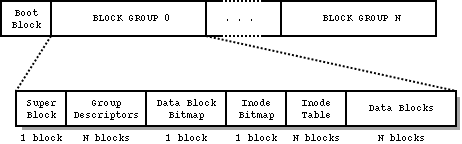
Inode
- Inoda (index node) je fundamentalan koncept za ext2 fajl sistem: sve o čemu fajl sistem vodi računa (fajl, direktorijum, link…) ima indeksni čvor, inodu. Taj čvor sadrži sve metapodatke o fajlu (tu se nalaze podaci o vlasniku, dozvolama, itd.) kao i, vrlo bitno, pokazivač ka blokovima sistema gde se fajlovi nalaze.
- Sve inode se nalaze u inode tabelama, sa po jednom takvom tabelom po grupi blokova.
Fajl sistem pokazivači i inoda
- Postavlja se pitanje, kako da znamo gde se sve na disku nalazi naš fajl? ext2 ima jednostavan pristup. Prvo čuva 12 pokazivača (broja bloka) sa tkzv. direktnim podacima. Ako fajl stane tu, dobro. Ako ne, ima i pokazivač ka jednostruko indirektnom bloku.
- Taj pokazivač pokazuje na blok koji u sebi sadrži sekvencu pokazivača ka blokovima sa podacima.
- Ako i dalje nema mesta? Onda imamo pokazivač ka dvostruko indirektnom bloku koji u sebi sadrži pokazivače ka blokovima koji u sebi imaju pokazivače ka blokovima podataka.
Fajl sistem pokazivači i inoda
- Ako i dalje nema mesta?
- Onda imamo trostruko indirektnu adresu
- To je pokazivač na blok koji sadrži listu pokazivača koji pokazuju na blokove koji sadrže liste pokazivača koje pokazuju na blokove koje imaju u sebi podatke.Ovo znači da ima maksimalna veličina fajla a to je za sistem sa 32 - bitnim pokazivačima na blok
Fajl sistem pokazivači i inoda
- 12 _ bs + (bs / 4) _ bs + (bs / 4) _ (bs / 4) _ bs + (bs / 4) _ (bs / 4) _ (bs / 4) * bs bajtova,
- gde je bs veličina bloka,
- tako da za 4kb blok maksimalna veličina bi bila oko 4402345721856 bajtova,odn.oko 4100GB.
Veličina fajla u praksi
U praksi, fajl je ograničen on - disk veličinom bloka(koja se razlikuje od ext2 bloka i iznosi 512 bajtova) i time što je sistem 32 - bitni, te je maksimalan broj on - disk blokova u \(2^{32} - 1\), što znači da je stvarni limit na veličinu fajla \((2^{32} - 1) \cdot 512\), odn.2TB
Inoda
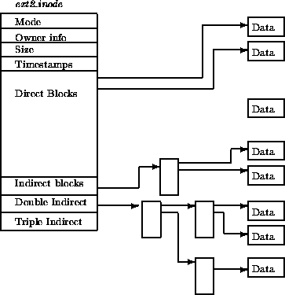
Direktorijumi i linkovi
- Što se tiče ext2 sve je fajl.
- Samo što određeni fajlovi imaju posebno interpretiran sadržaj, npr:
- Linkovi su ‘pokazivač’ ka drugom fajlu
- Ovo se odnosi na meke, simbolične linkove. Tvrdi linkovi su u stvari stavka u direktorijumu koja se odnosi na istu inod-u kao i neki drugi fajl.
- Direktorijumi su lista pokazivača ka fajlovima
Da li se ovo koristi?
- Tehnički, koriste se modernije verzije, ext3 i ext4 koje su u velikoj meri kompatibilne sa tim kako ext2 radi.
- Ext je od ‘extensible’ tako da je oduvek bila ideja da fajl sistem može da se proširi.
- Glavna promena koja je ubačena u ext3 je vođenje žurnala diska.
Žurnal fajl sistema—motivacija
- Za određene operacije diska neželjen prekid (recimo gubljenjem struje) je spektakularno loša ideja. Ako brišemo fajl na disku očekujemo sledeće operacije u ext2:
- Uklonimo zapis o fajlu iz sadžraja direktorijuma tog fajla.
- Ako nema više tvrdih linkova na nju, oslobodimo inode tog fajla podešavanjem bitmape.
- Oslobodimo sve blokove na koje pokazujemo tako što modifikujemo bitmape i metapodatke svih grupa gde se nalaze blokovi tog fajla.
Žurnal fajl sistema—motivacija
- Za veliki fajl ovo su potencijalno stotine upisa na disk, a fajl sistem je samo konzistentan sam sa sobom na početku svih tih upisa i na kraju. Prekid bilo gde izaziva, npr. prostor koji ne koristi nijedan fajl, a koji je tehnički i dalje zauzet, ili inode koji se vodi kao zauzet a kome ne možete da priđete ili hiljadu drugih problema.
- To znači da gubitak struje dovodi do potencijalnog oštećenja diska što moramo da (pokušavamo) da otklonimo posebnim komandama kao što je fsck. Ovo nije idealno.
Žurnal fajl sistema
- Rešenje ovog problema jeste da postoji deo fajl sistema (žurnal) alociran i organizovan kao cirkularni bafer koji sadrži zapis svih promena koje hoćemo da uradimo i koji se povremeno prazni tako što se logovane operacije izvrše na disku.
- Ako nestane struje u sred procesa, prilikom sledećeg aktiviranja fajl sistema (Unix to zove ‘mount’-ovanje fajl sistema), se primeti da ima neizvršenih žurnal operacija, i postara se da su ili sve te operacije izvršene (te je sistem konzistentan) ili se od cele operacije odustalo.
Konzistentnost žurnala
- Ovo nije savršeno rešenje. Prvi problem je: Šta ako nestane struje baš kada pišemo žurnal?
- Rešenje je da se izračuna i prvo upiše kontrola vrednost (checksum) cele transakcije, tako da ako pukne upis pre kraja, to se može preko kontrolne vrednosti ustvrditi i ta transakcija ignorisati u žurnalu.
Konzistentnost žurnala
- Drugi, mnogo veći problem, jeste interakcija između keširanja upisa na disk i žurnala. Žurnal se bazira na ideji da znamo redosled operacija upisa i da nećemo, recimo, početi da upisujemo podatke pre nego alociramo prostor kroz metapodatke.
- I fajl sistem i sami disk uređaji često menjaju redosled operacija upisa zbog performansi. I mi smo to radili!
- Ovo je rizik koji neki fajl sistemi, ext4, na primer, rešavaju uvođenjem barijera: tačaka gde se keš nasilno spusti na sam disk.
Fajl sistemi uopšte
Sloj operativnog sistema za rukovanje datotekama
- Zadatak: ozbezbediti punu slobodu rukovanja podacima u datotekama.
- Punu slobodu rukovanja podacima nudi predstava datoteke kao niza bajta.
- Niz se može, po potrebi, menjati i njemu se može pristupati u proizvoljnom redosledu, korišćenjem rednog broja bajta za njegovu identifikaciju.
- Ovakva predstava datoteke dozvoljava da se datoteka posmatra kao skup slogova iste ili različite dužine, koji se identifikuju pomoću posebnih indeksa.
Kontinualne datoteke
- Sadržaji datoteka se nalaze u blokovima masovne memorije. Za bilo kakvo rukovanje ovim sadržajem neophodno je da on dospe u radnu memoriju.
- Zato je rukovanje bajtima sadržaja datoteke neraskidivo povezano sa prebacivanjem blokova sa ovim bajtima između radne i masovne memorije.
- Pri tome se bajti prebacuju iz radne u masovnu memoriju radi njihovog trajnog čuvanja, a iz masovne u radnu memoriju radi obrade.
Kontinualne datoteke
- Da bi ovakvo prebacivanje bilo moguće, neophodno je da sloj za rukovanje datotekama uspostavi preslikavanje rednih brojeva bajta u redne brojeve njima odgovarajućih blokova.
- Ovakvo preslikavanje se najlakše uspostavlja, ako se sadržaj datoteke nalazi u susednim blokovima.
- Ovakve datoteke se nazivaju kontinualne (contiguous).
- Kod kontinualnih datoteka redni broj bloka sa traženim bajtom se određuje kao količnik rednog broja bajta i veličine bloka, izražene brojem bajta koje sadrži svaki blok.
- Pri tome, ostatak deljenja ukazuje na relativni položaj bajta u bloku.
Kontinualne datoteke
- Kontinualne datoteke zahtevaju od sloja za rukovanje datotekama da za svaku datoteku vodi evidenciju o:
- imenu datoteke
- rednom broju početnog bloka
- dužini datoteke
- Ove podatke čuva deskriptor datoteke.
- Dužina datoteke može biti izražena brojem bajta, ali i brojem blokova, koga obavezno prati podatak o popunjenosti poslednjeg zauzetog bloka.
Kontinualne datoteke
- Pojava da poslednji zauzeti blok datoteke nije popunjen do kraja se naziva interna fragmentacija (internal fragmentation).
- Ova pojava je važna, jer nepopunjeni poslednji zauzeti blok datoteke predstavlja neupotrebljen deo masovne memorije.
- Sloj za rukovanje datotekama obavezno vodi i evidenciju slobodnih blokova masovne memorije.
Kontinualne datoteke
- Za potrebe kontinualnih datoteka bitno je da ova evidencija olakša pronalaženje dovoljno dugačkih nizova susednih blokova.
- Zato je podesna evidencija u obliku niza bita (bit map), u kome svaki bit odgovara jednom bloku i pokazuje da li je on zauzet (0) ili slobodan (1).
Kontinualne datoteke
- U slučaju ovakve evidencije, pronalaženje dovoljno dugačkih nizova susednih blokova se svodi na pronalaženje dovoljno dugačkog niza jedinica u nizu bita koji odslikava zauzetost masovne memorije.
- Rukovanje slobodnim blokovima masovne memorije zahteva sinhronizaciju (međusobnu isključivost procesa), da bi se, na primer, izbeglo da više procesa, nezavisno jedan od drugog, zauzme iste slobodne blokove masovne memorije.
Kontinualne datoteke
- Pojava iscepkanosti slobodnih blokova masovne memorije u kratke nizove susednih blokova otežava rukovanje kontinualnim datotekama.
- Ta pojava se zove eksterna fragmentacija (external fragmentation).
- Ona nastaje kao rezultat višestrukog stvaranja i uništenja datoteka u slučajnom redosledu, pa nakon uništavanja datoteka ostaju nizovi slobodnih susednih blokova, međusobno razdvojeni blokovima postojećih datoteka.
Kontinualne datoteke
- Problem eksterne fragmentacije se povećava, kada se, prilikom traženja dovoljno dugačkog niza susednih blokova, pronađe niz duži od potrebnog, jer se tada zauzima (allocation) samo deo blokova u pronađenom nizu.
- To dovodi do daljeg drobljenja nizova slobodnih susednih blokova, jer preostaju sve kraći nizovi slobodnih susednih blokova.
Kontinualne datoteke
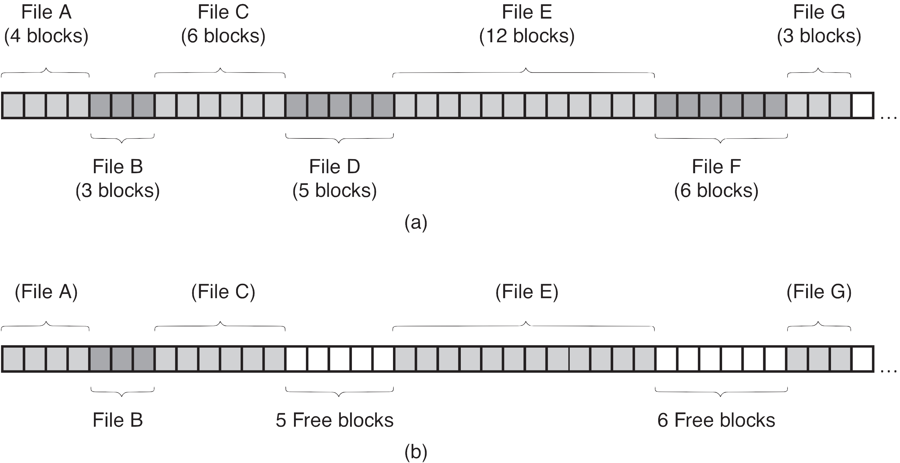
Kontinualne datoteke
- Eksterna fragmentacija je problematična, jer posredno izaziva neupotrebljivost slobodnih blokova masovne memorije.
- Eksterna fragmentacija onemogućuje stvaranje kontinualne datoteke, čija dužina je jednaka sumi slobodnih blokova, kada oni ne obrazuju niz susednih blokova.
Kontinualne datoteke
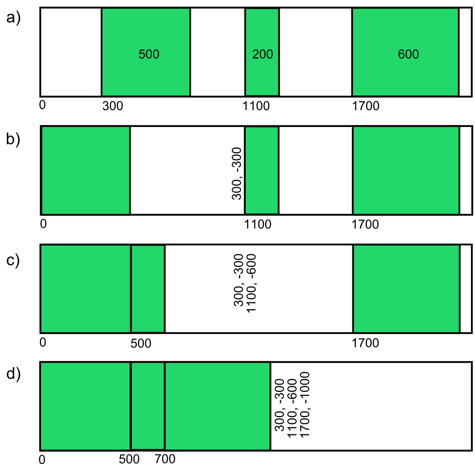
Kontinualne datoteke
- Problem eksterne fragmentacije se može rešiti sabijanjem (compaction) datoteka, tako da svi slobodni blokovi budu potisnuti iza datoteka i da tako obrazuju niz susednih blokova. Mana ovog postupka je njegova dugotrajnost.
Kontinualne datoteke
- U opštem slučaju produženje kontinualne datoteke je komplikovano, jer zahteva stvaranje nove, veće kontinualne datoteke, prepisivanje sadržaja produžavane datoteke u novu datoteku i uništavanje produžavane datoteke.
- Problem produženja kontinualne datoteke se ublažava, ako se dozvoli da se kontinualna datoteka sastoji od više kontinualnih delova.
Kontinualne datoteke
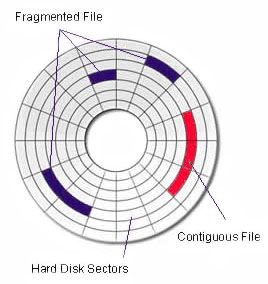
Kontinualne datoteke
- Pri tome se za svaki od ovih delova u deskriptoru datoteke čuvaju podaci o rednom broju početnog bloka dotičnog dela i o njegovoj dužini (extent list).
- Ovakav pristup je zgodan za veoma dugačke datoteke (namenjene za čuvanje zvučnog ili video zapisa).
Rasute datoteke
- Upotrebnu vrednost kontinualnih datoteka značajno smanjuju problemi:
- eksterne fragmentacije
- potreba da se unapred zna njihova veličina
- teškoće sa njihovim produžavanjem.
- Zato se umesto kontinualnih koriste rasute (noncontiguous) datoteke, čiji sadržaj je smešten (rasut) u nesusednim blokovima masovne memorije.
- Kod rasutih datoteka redni brojevi bajta se preslikavaju u redne brojeve blokova pomoću posebne tabele pristupa (file allocation table - FAT).
Rasute datoteke
- Njeni elementi sadrže redne brojeve blokova. Indekse ovih elemenata određuje količnik rednog broja bajta i veličine bloka.
- Iz prethodnog sledi da dužinu rasutih datoteka ograničava veličina tabele pristupa.
- Zato se veličina tabele pristupa dimenzionira tako da zadovolji najveće praktične zahteve u pogledu dužine rasutih datoteka.
Rasute datoteke
- Tabele pristupa se čuvaju u blokovima masovne memorije (kao, uostalom, i sadržaji datoteka).
- Radi manjeg zauzeća, važno je da se u blokovima masovne memorije ne čuva uvek cela tabela pristupa, nego samo njen neophodan (stvarno korišćen) deo.
- Zato se tabela pristupa deli u odsečke.
- Početni odsečak, sa p elemenata tabele pristupa je uvek prisutan. On nije veći od bloka masovne memorije. Dodatni odsečci su prisutni samo kad su neophodni.
Rasute datoteke
- Svaki dodatni odsečak je jednak bloku masovne memorije i može da sadrži b elemenata tabele pristupa (b > p).
- Prema tome, tabela pristupa svake rasute datoteke zauzima jedan blok , u kome se nalazi početni odsečak ove tabele sa p njenih elemenata.
- Za tabelu pristupa se, po potrebi, zauzima još jedan blok sa dodatnim odsečkom, u kome se nalazi narednih b njenih elemenata.
Rasute datoteke
- Kada zatreba još dodatnih odsečaka, za tabelu pristupa se zauzima poseban blok prvog stepena indirekcije.
- On sadrži do b rednih brojeva blokova sa dodatnim odsečcima.
- U svakom od njih se nalazi b novih elemenata tabele pristupa.
Rasute datoteke
- Na kraju, po potrebi, za ovu tabelu se zauzima poseban blok drugog stepena indirekcije.
- On sadrži do b rednih brojeva blokova prvog stepena indirekcije.
- Svaki od njih sadrži do b rednih brojeva blokova sa dodatnim odsečcima, a u svakom od njih se nalazi b novih elemenata tabele pristupa.
- Prema tome, ukupno ima 1+b+b2 dodatnih odsečaka, svaki sa b elemenata tabele pristupa.
Rasute datoteke
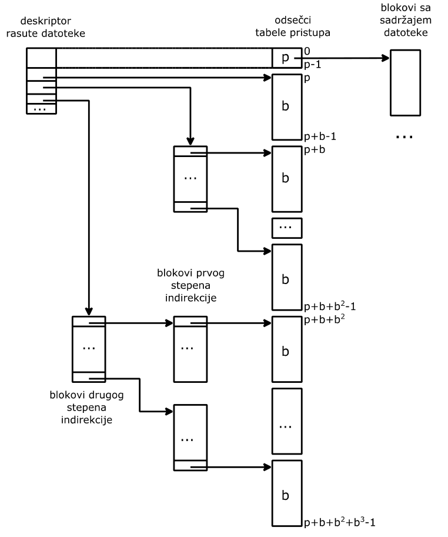
Rasute datoteke
- Deskriptor rasute datoteke sadrži početni odsečak tabele pristupa, redni broj njenog prvog dodatnog odsečka, redni broj bloka prvog stepena indirekcije i redni broj bloka drugog stepena indirekcije.
- Pored toga, ovaj deskriptor sadrži i dužinu rasute datoteke, da bi se znalo koliko blokova je zauzeto sadržajem i koliko je popunjen poslednji zauzeti blok.
Rasute datoteke
- Ideja, korišćena za organizaciju tabele pristupa, može da se upotrebi i za organizaciju evidencije slobodnih blokova masovne memorije.
- U ovom slučaju ova evidencija ima oblik liste slobodnih blokova.
- Slobodni blokovi, uvezani u ovu listu, sadrže redne brojeve ostalih slobodnih blokova, pa podsećaju na blokove prvog stepena indirekcije.
Konzistentnost sistema datoteka
- Iza rukovanja datotekama krije se rukovanje blokovima masovne memorije, u kojima se nalaze i sadržaj i deskriptor i, eventualno, dodatni odsečci tabele pristupa svake rasute datoteke.
- Rukovanje ovim blokovima usložnjava činjenica da se međusobno zavisni podaci nalaze u raznim blokovima.
- Pošto se blokovi modifikuju u radnoj memoriji, a trajno čuvaju u masovnoj memoriji, prirodno je da u pojedinim trenucima postoji razlika između blokova u masovnoj memoriji i njihovih kopija u radnoj memoriji.
Konzistentnost sistema datoteka
- Probleme izaziva gubitak kopija blokova u radnoj memoriji, na primer, zbog nestanka napajanja.
- Tako, na primer, produženje rasute datoteke zahteva:
- izmenu evidencije slobodnih blokova, radi isključivanja pronađenog slobodnog bloka iz ove evidencije
- izmenu tabele pristupa produžavane rasute datoteke, radi smeštanja rednog broja novog bloka u element ove tabele.
Konzistentnost sistema datoteka
- Izmena evidencije slobodnih blokova dovodi do promene jedne od kopija njenih blokova u radnoj memoriji. Isti efekat ima i izmena tabele pristupa produžavane rasute datoteke.
- Ako obe izmenjene kopije budu prebačene u masovnu memoriju, tada je produženje rasute datoteke uspešno obavljeno.
- Ako ni jedna od kopija ne dospe u masovnu memoriju, tada produženje rasute datoteke nije obavljeno, jer nije registrovano u masovnoj memoriji.
- Ali, ako samo jedna od promenjenih kopija dospe u masovnu memoriju, tada se javljaju problemi konzistentnosti sistema datoteka.
Konzistentnost sistema datoteka
- U jednom slučaju, kada samo promenjena kopija bloka evidencije slobodnih blokova dospe u masovnu memoriju, blok isključen iz ove evidencije postaje izgubljen, jer njegov redni broj nije prisutan niti u ovoj evidenciji, a niti u tabeli pristupa neke od rasutih datoteka.
- U drugom slučaju, kada samo promenjena kopija bloka tabele pristupa dospe u masovnu memoriju, blok, pridružen ovoj tabeli, ostaje i dalje uključen u evidenciju slobodnih blokova.
Konzistentnost sistema datoteka
- Prvi slučaj je bezazlen, jer se izgubljeni blokovi mogu pronaći.
- Pronalaženje izgubljenih blokova se zasniva na traženju blokova koji nisu prisutni ni u evidenciji slobodnih blokova, ni u tabelama pristupa rasutih datoteka.
- Za razliku od prvog slučaja, drugi slučaj je neprihvatljiv, jer može da izazove istovremeno uključivanje istog bloka u više rasutih datoteka, čime se narušava njihova konzistentnost.
Konzistentnost sistema datoteka
- Zato je neophodno uvek prebacivati u masovnu memoriju prvo promenjenu kopiju bloka evidencije slobodnih blokova, pa tek iza toga i promenjenu kopiju bloka tabele pristupa.
- Znači, potrebno je paziti na redosled u kome se izmenjene kopije blokova prebacuju u masovnu memoriju.
Konzistentnost sistema datoteka
- U opštem slučaju konzistentnost sistema datoteka može da se zasniva na vođenju pregleda izmena (journal).
- Pre bilo kakve izmene sistema datoteka, u pregledu izmena se registruje potpun opis nameravane izmene, na osnovu koga je moguće izvršiti oporavak sistema datoteka posle nedovršene izmene.
Konzistentnost sistema datoteka
- Tek nakon toga se pristupa izmeni sistema datoteka. Po uspešno obavljenoj izmeni, u pregledu izmena se to i registruje.
- Ako u pregledu izmena nije registrovan potpun opis nameravane izmene, tada izmena nije ni započeta, pa je sistem datoteka u konzistentom stanju.
- Kada je u pregledu izmena registrovan potpun opis nameravane izmene, ali nije registrovano njeno uspešno obavljanje, tada je sistem datoteka moguće vratiti u konzistentno stanje.
Konzistentnost sistema datoteka
- Ako su u pregledu izmena registrovani potpuni opis nameravane izmene i njeno uspešno obavljanje, tada je sistem datoteka u konzistentnom stanju.
- Ideja pregleda izmena može da bude osnova za organizovanje celog sistema datoteka (log structured file system).
- U ovom pristupu izmena svake datoteke se registruje samo u posebnom pregledu izmena, čijom kasnijom analizom se, po potrebi, rekonstruiše aktuelni sadržaj datoteke.
Konzistentnost sistema datoteka
- Nakon izmene kopije bloka u radnoj memoriji, važno je što pre izmenjenu kopiju prebaciti u masovnu memoriju, radi smanjenja mogućnosti da se ona izgubi (na primer, kao posledica nestanka napajanja).
- To je naročito važno, ako izmena nije rezultat automatske obrade, nego ljudskog rada (na primer, editiranja), jer se tada ne može automatski rekonstruisati.
Baferski prostor
- Pristupi sadržaju datoteke mogu zahtevati prebacivanje više blokova u radnu memoriju:
- bloka sa deskriptorom datoteke
- jednog ili više dodatnih blokova tabele pristupa
- bloka sa traženim bajtima sadržaja
- Pošto je, sa stanovišta procesora, prenos blokova na relaciji radna i masovna memorija, spor (dugotrajan), dobra ideja je zauzeti u radnoj memoriji prostor za više bafera, namenjenih za čuvanje kopija korišćenih blokova (block cache, buffer cache).
- Pošto je radna memorija mnogo manja od masovne, njeni baferi mogu istovremeno da sadrže mali broj kopija blokova masovne memorije.
Baferski prostor
- Zato je važno da baferi sadrže kopije blokova, koje će biti korišćene u neposrednoj budućnosti, jer se samo tako značajno ubrzava obrada podataka.
- Problem se javlja kada su svi baferi napunjeni, a potrebno je pristupiti bloku masovne memorije, čija kopija nije prisutna u nekom od bafera.
- U tom slučaju neizbežno je oslobađanje nekog od bafera, da bi se u njega smestila kopija potrebnog bloka.
- Iskustvo pokazuje da je najbolji pristup osloboditi bafer za koga trenutak poslednjeg pristupa njegovom sadržaju prethodi trenucima poslednjeg pristupa sadržajima svih ostalih bafera (Least Recently Used - LRU).
Baferski prostor
- Za takav bafer se kaže da ima najstariju referencu.
- Pri oslobađanju bafera, njegov dotadašnji sadržaj se poništava, kada bafer sadrži neizmenjenu kopiju bloka, jer je ona identična bloku masovne memorije.
- U suprotnom slučaju, neophodno je sačuvati izmene, pa se kopija prebacuje u masovnu memoriju.
- U oslobođeni bafer se prebacuje kopija potrebnog bloka masovne memorije.
Baferski prostor
- Da bi se znalo koja od kopija ima najstariju referencu, baferi se uvezuju u listu.
- Na početak ovakve liste se uvek prebacuje bafer sa upravo korišćenom kopijom (sa najnovijom referencom), pa na njen kraj nužno dospeva bafer sa najstarijom referencom.
Baferski prostor
- Baferovanje izmenjenih kopija blokova u radnoj memoriji zahteva da se odredi trenutak u kome se izmenjena kopija prebacuje u masovnu memoriju.
- Ako se izmenjena kopija prebacuje u masovnu memoriju odmah nakon svake izmene, tada se usporava rad.
- Ako se izmenjena kopija prebacuje u masovnu memoriju tek pri oslobađanju bafera, tada se povećava mogućnost gubljenja izmene.
Baferski prostor
- Rešavanje ovoga problema se može posredno prepustiti korisniku, ako se uvede posebna sistemska operacija (sync()) za izazivanje prebacivanja sadržaja bafera u masovnu memoriju.
- U tom slučaju izmenjene kopije dospevaju u masovnu memoriju ili kada se baferi oslobađaju ili kada to zatraži korisnik.
- Potreba da se kopija bloka što brže nakon izmene prebaci u masovnu memoriju je u suprotnosti sa nastojanjem da se blokovi što ređe prenose između radne i masovne memorije.
Baferski prostor
- Na brzinu prebacivanja podataka između radne i masovne memorije važan uticaj ima i veličina bloka.
- Što je blok veći, u proseku se potroši manje vremena na prebacivanje jednog bajta između radne i masovne memorije.
- Međutim, što je blok veći, veća je i interna fragmentacija.
- Ta dva oprečna zahteva utiču na izbor veličine bloka, koja se kreće od 512 bajta do 8192 bajta.
Deskriptor datoteke
- Deskriptor datoteke, pored atributa koji omogućuju preslikavanje rednih brojeva bajta u redne brojeve blokova, sadrži i:
- numeričku oznaku vlasnika datoteke
- prava pristupa datoteci za njenog vlasnika, za njegove saradnike i za ostale korisnike
- podatak da li je datoteka zaključana ili ne
- SUID podatak da li numerička oznaka vlasnika datoteke postaje numerička oznaka vlasnika procesa stvorenog na osnovu sadržaja datoteke (važi samo za izvršne datoteke)
- datum poslednje izmene datoteke
Deskriptor datoteke
- Činjenica, da deskriptor datoteke sadrži prava pristupa datoteci, podrazumeva da je sadržaj masovne memorije fizički zaštićen.
- To podrazumeva da se centralni delovi računara nalaze u zaštićenoj (sigurnoj) prostoriji, a da su samo periferni delovi računara direktno na raspolaganju korisnicima.
- Kada to nije moguće, alternativa je da sadržaj masovne memorije bude kriptovan.
Deskriptor datoteke
- Podatak da li je datoteka zaključana ili ne se čuva u kopiji deskriptora u radnoj memoriji.
- Ova kopija nastane prilikom otvaranja datoteke.
- Podatak da li je datoteka zaključana ili ne je uveden radi ostvarenja međusobne isključivosti procesa u toku pristupa datoteci.
- Pri tome se podrazumeva da su aktivnosti ovih procesa međusobno isključive i u toku obavljanja operacije zaključavanja datoteke.
Deskriptor datoteke
- U ovoj operaciji se proverava da li je datoteka zaključana i eventualno obavi njeno zaključavanje.
- Sinhronizacija procesa u toku obavljanja ove operacije je neophodna, da bi se sprečilo da dva ili više procesa istovremeno zaključe da je ista datoteka otključana i da, nezavisno jedan od drugog, istovremeno zaključaju pomenutu datoteku.
Deskriptor datoteke
- Pomenuta sinhronizacija obezbeđuje da uvek najviše jedan proces zaključa datoteku, jer samo on pronalazi otključanu datoteku, dok svi preostali istovremeno aktivni procesi pronalaze zaključanu datoteku.
- Ako je za nastavak aktivnosti ovih preostalih procesa neophodno da pristupe datoteci, tada se njihova aktivnost zaustavlja do otključavanja datoteke.
Deskriptor datoteke
- Njeno izvršavanje omogućuje nastavak aktivnosti samo jednog od procesa, čija aktivnost je zaustavljena do otključavanja datoteke.
- Ako takav proces postoji, datoteka se i ne otključava, nego se samo prepušta novom procesu. Inače, datoteka se otključava.
- I operacija otključavanja datoteka zahteva sinhronizaciju procesa.
Deskriptor datoteke
- U slučaju zaključavanja datoteke, moguće je da proces nastavi svoju aktivnost i nakon neuspešnog pokušaja zaključavanja datoteke.
- Jasno, tada se podrazumeva da on neće pristupati pomenutoj datoteci.
- Prema tome, operacija zaključavanja datoteke je blokirajuća, kada, radi uslovne sinhronizacije, u toku njenog obavljanja dolazi do zaustavljanja aktivnosti procesa, dok se ne stvore uslovi za međusobno isključive pristupe zaključanoj datoteci.
Deskriptor datoteke
- Ova operacija je neblokirajuća, kada njena povratna vrednost ukazuje na neuspešan pokušaj zaključavanja datoteke i na nemogućnost pristupa datoteci, koju je zaključao neki drugi proces.
- Sinhronizaciju procesa moraju da obezbede ne samo operacije zaključavanja i otključavanja datoteke, nego i sve druge operacije za rukovanje deskriptorima datoteka.
- Jedino tako se može obezbediti očuvanje konzistentnosti deskriptora.
Imenici
- Ime datoteke je prirodno vezano za njen deskriptor.
- Pošto se ime datoteke nalazi u imeniku, uz njega bi, u imenik, mogao da bude smešten i deskriptor datoteke.
- Međutim, tipičan način korišćenja imenika je njihovo pretraživanje, radi pronalaženja imena imenika ili imena datoteke, navedene u datoj putanji.
Imenici
- Ovakvo pretraživanje prirodno prethodi pristupu sadržaju datoteke, odnosno sadržaju imenika.
- Brzina tog pretraživanja je veća što su imenici kraći, jer se tada manje podataka prebacuje između radne i masovne memorije.
- Znači uputno je da imenici sadrže samo imena datoteka i imenika, a ne i njihove deskriptore, pogotovo ako su deskriptori veliki.
- Zato se deskriptori (inodes) čuvaju na disku van imenika.
Imenici
- Da bi se uspostavila veza između imena datoteka, odnosno imena imenika sa jedne strane i njihovih deskriptora sa druge strane, u imenicima se, uz imena datoteka, odnosno uz imena imenika, navode i redni brojevi njihovih deskriptora, koji jednoznačno određuju ove deskriptore.
- Prema tome, imenik je datoteka koja sadrži tabelu u čijim elementima su imena datoteka (odnosno, imena imenika) i redni brojevi njihovih deskriptora
Imenici
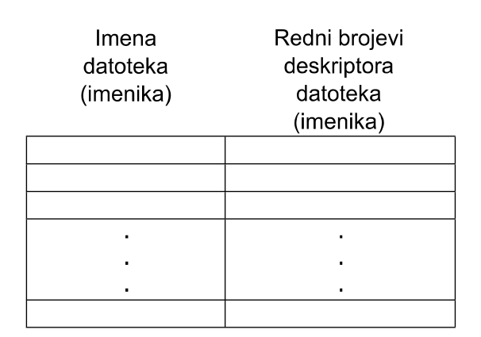
Imenici
- Iz rednog broja deskriptora se može odrediti redni broj bloka masovne memorije, u kome se deskriptor nalazi, ako se izvestan broj susednih blokova rezerviše samo za smeštanje deskriptora.
- Pod pretpostavkom da blok sadrži celi broj deskriptora, količnik rednog broja deskriptora i ukupnog broja deskriptora u bloku određuje redni broj bloka sa deskriptorom.
- Pri tome se podrazumeva da je deskriptor sa rednim brojem 0 rezervisan za korenski imenik.
Imenici
- Zahvaljujući ovoj pretpostavci, moguće je uvek pronaći deskriptor korenskog imenika i od njega započeti pretraživanje imenika, što obavezno prethodi pristupu sadržaju datoteke.
- Tako, na primer, za pristup sadržaju datoteke sa putanjom:
- /fakultet/odsek/godina.txt
- potrebno je prebaciti u radnu memoriju blok sa deskriptorom korenskog imenika, koji je poznat, zahvaljujući činjenici da je redni broj (0) deskriptora korenskog imenika unapred zadan.
Imenici
- U deskriptoru korenskog imenika se nalaze redni brojevi blokova sa sadržajem korenskog imenika.
- Nakon prebacivanja ovih blokova u radnu memoriju, moguće je pretražiti sadržaj korenskog imenika, da bi se ustanovilo da li on sadrži ime fakultet.
- Ako sadrži, uz ovo ime je i redni broj deskriptora odgovarajućeg imenika, iz koga se može odrediti redni broj bloka u kome se nalazi ovaj deskriptor.
Imenici
- Po prebacivanju ovog bloka u radnu memoriju, u pomenutom deskriptoru se pronalaze redni brojevi blokova sa sadržajem imenika fakultet.
- Nakon prebacivanja ovih blokova u radnu memoriju, moguće je pretražiti sadržaj i ovog imenika, da bi se ustanovilo da li on sadrži ime odsek.
- Ako sadrži, uz ovo ime je i redni broj deskriptora odgovarajućeg imenika, iz koga se može odrediti redni broj bloka u kome se nalazi ovaj deskriptor.
Imenici
- Po prebacivanju ovog bloka u radnu memoriju, u pomenutom deskriptoru se pronalaze redni brojevi blokova sa sadržajem imenika odsek.
- Nakon prebacivanja ovih blokova u radnu memoriju moguće je pretražiti sadržaj i ovog imenika, da bi se ustanovilo da li on sadrži ime datoteke godina.txt.
Imenici
- Ako sadrži, uz nju je i redni broj deskriptora odgovarajuće datoteke, iz koga se može odrediti redni broj bloka u kome se nalazi ovaj deskriptor.
- Po prebacivanju ovog bloka u radnu memoriju, u pomenutom deskriptoru se pronalaze redni brojevi blokova sa sadržajem datoteke godina.txt.
- Tek tada je moguć pristup ovom sadržaju.
Imenici
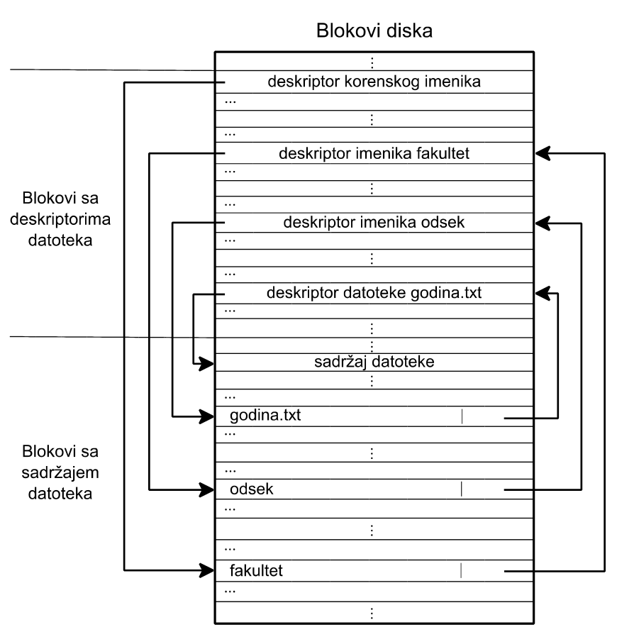
Imenici
- U toku pristupa imenicima, neophodno je njihovo zaključavanje, radi obezbeđenja međusobne isključivosti pristupa raznih procesa istom imeniku.
- Za imenike je važno pitanje da li ista datoteka može istovremeno biti registrovana u dva ili više imenika.
- Ako se to dozvoli, tada razne putanje mogu voditi do istog sadržaja.
Imenici
- To je efikasan način da vlasnik, ali i više drugih korisnika istu datoteku mogu naći svaki u svom imeniku, a da ne moraju praviti sopstvenu kopiju datoteke.
- Pri tome, svaki od drugih korisnika može dotičnoj datoteci dati novo ime, koje se naziva link (link).
- Slika sadrži prikaz tri imenika (predstavljeni kvadratima) i tri datoteke (predstavljene krugovima).
- Do srednje datoteke vode dve putanje (link je predstavljen isprekidanom linijom).
Imenici
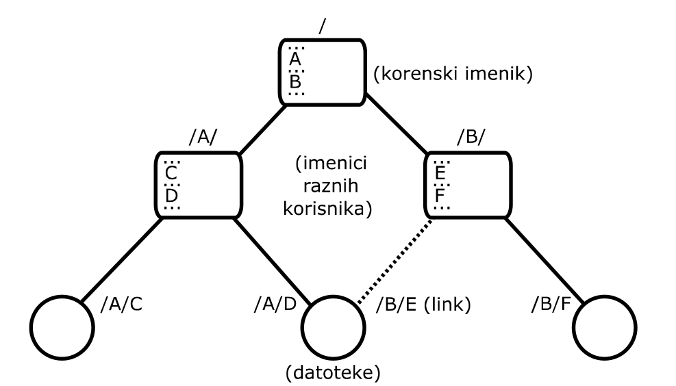
Imenici
- U imeniku uz link može biti naveden redni broj deskriptora odgovarajuće datoteke (hard link), ali može biti navedena putanja datoteke njenog vlasnika (soft link).
- U prvom slučaju, deskriptor datoteke mora da sadrži broj linkova.
- Ako se dozvoli da i imenici imaju linkove, tada postaju mogući ciklusi u hijerarhijskoj organizaciji datoteka (jer imenik može sadržati svoj link ili link imenika sa višeg nivoa hijerarhije).
Memorija
Zadatak sloja za rukovanje radnom memorijom
- Sloj za rukovanje radnom memorijom rukuje fizičkom radnom memorijom.
- Fizičkoj radnoj memoriji se pristupa posredstvom fizičkog adresnog prostora (koga koristi operativni sistem), ali i preko logičkih adresnih prostora (po jedan za svaki korisnički proces).
- Logički adresni prostori izoluju procese (međusobno i od operativnog sistema) tako što ograničavaju pristup procesa samo na deo fizičke radne memorije.
Zadatak sloja za rukovanje radnom memorijom
- To se postiže preslikavanjem logičkog adresnog prostora svakog od procesa na samo jedan deo fizičkog adresnog prostora, koji odgovara delu fizičke memorije, dodeljene dotičnom procesu.
- Preslikavanje obavlja MMU (Memory Management Unit) tako što logičke adrese pretvara (translira) u odgovarajuće fizičke adrese.
- Funkcionisanje i organizacija MMU zavisi od karaktera logičkog adresnog prostora. Logički adresni prostor može biti:
Zadatak sloja za rukovanje radnom memorijom
- Kontinualan
- Sastavljen od segmenata raznih veličina
- Sastavljen od stranica iste veličine
- Sastavljen od segmenata raznih veličina koji se sastoje od stranica iste veličine
Kontinualni logički adresni prostor
- Kontinualni logički adresni prostor se sastoji od jednog niza uzastopnih logičkih adresa, koji počinje od logičke adrese 0.
- Veličina kontinualnog logičkog adresnog prostora nadmašuje potrebe prosečnog procesa.
- Zato, da bi se mogao detektovati pokušaj izlaska procesa iz njegovog logičkog adresnog prostora, neophodno je poznavati najvišu ispravnu logičku adresu procesa.
- Ona se zove granična adresa procesa. Logičke adrese procesa ne smeju biti veće od njegove granične adrese.
Kontinualni logički adresni prostor
- Za kontinualni logički adresni prostor se podrazumeva da se niz uzastopnih logičkih adresa preslikava u niz uzastopnih fizičkih adresa.
- Ova dva niza se razlikuju po tome što niz uzastopnih fizičkih adresa ne počinje od 0 nego od neke adrese koja se zove bazna adresa.
- Znači, dodavanjem bazne adese logičkoj adresi nastaje fizička adresa.
- U toku translacije logičke adrese u fizičku, MMU poredi logičku i graničnu adresu. Ako je logička adresa veća, MMU izaziva izuzetak, inače sabira baznu adresu sa logičkom adresom da bi dobio fizičku adresu.
Segmentirani logički adresni prostor
- Segmentirani logički adresni prostor (segmentation) se sastoji od više nizova uzastopnih logičkih adresa (za svaki segment po jedan niz).
- Da bi se znalo kom segmentu pripada logička adresa, njeni značajniji biti sadrže adresu njenog segmenta, a manje značajni biti sadrže unutrašnju adresu u njenom segmentu.
- Pošto je svaki segment kontinualan, on ima svojstva kontinualnog logičkog adresnog prostora. Zato svaki segment karakterišu njegova granična i bazna adresa.
Segmentirani logički adresni prostor
- U ovom slučaju za translaciju je potrebna tabela segmenata.
- Broj njenih elemenata određuje najveći broj segmenata u segmentiranom logičkom adresnom prostoru.
- Svaki element ove tabele sadrži graničnu i baznu adresu odgovarajućeg segmenta.
- Adresa segmenta indeksira element tabele segmenata, a njegove graničnu i baznu adresu koristi MMU za translaciju unutrašnje adrese segmenta u fizičku adresu.
Stranični logički adresni prostor
- Stranični logički adresni prostor (paging) se sastoji od jednog niza uzastopnih logičkih adresa (podeljenog u stranice iste veličine).
- Da bi se znalo kojoj stranici pripada logička adresa, njeni značajniji biti sadrže adresu njene stranice, a manje značajni biti sadrže unutrašnju adresu u njenoj stranici.
- Pošto je svaka stranica kontinualna, ona ima svojstva kontinualnog logičkog adresnog prostora.
Stranični logički adresni prostor
- Razlika je da je veličina stranice unapred poznata i jednaka stepenu broja dva.
- Zato svaku stranicu karakteriše samo njena bazna adresa (graniča adresa nije potrebna, jer je unutrašnja adresa ograničena veličinom stranice).
- U ovom slučaju za translaciju je potrebna tabela stranica.
- Broj njenih elemenata jednak je najvećem broju stranica u straničnom logičkom adresnom prostoru.
- Svaki element ove tabele sadrži baznu adresu odgovarajuće stranice. Adresa stranice indeksira element tabele stranica, a njegovu baznu adresu koristi MMU za translaciju logičke adrese stranice u fizičku adresu.
Odnos procesa i logičkog adresnog prostora
- Svaki proces mora da ima neophodne translacione podatke koji obuhvataju ili graničnu i baznu adresu, ili tabelu segmenata, ili tabelu stranica, ili tabelu segmenata sa pripadnim tabelama stranica.
- Translacione podatke pripremi operativni sistem, prilikom stvaranja procesa. Da bi mogao da obavlja translaciju, MMU mora da raspolaže sa odgovarajućim translacionim podacima.
- Translacioni podaci se menjaju prilikom preključivanja, pa utiču na trajanje preključivanja.
- Veličina slike procesa određuje veličinu njegovog logičkog adresnog prostora.
Upotreba kontinualnog logičkog adresnog prostora
- Kontinualni logički adresni prostor se koristi kada je logički adresni prostor svakog procesa manji od raspoloživog fizičkog adresnog prostora.
- Da bi translacija logičkih adresa u fizičke bila moguća, neophodno je da se u lokacije fizičke radne memorije smesti slika procesa.
- U ovom slučaju, translacija logičkih adresa u fizičke adrese odgovara dinamičkoj relokaciji i olakšava zamenu slika procesa (swapping).
- Pokušaj procesa da izađe iz svog adresnog prostora izaziva izuzetak (SEGFAULT) na koji reaguje operativni sistem, tako što uništi dotični proces.
Upotreba segmentiranog logičkog adresnog prostora
- Segmentacija (segmentirani logički adresni prostor) se koristi kada je važno racionalno korišćenje fizičke radne memorije.
- I ovde se pretpostavlja da je logički adresni prostor procesa manji od raspoloživog fizičkog adresnog prostora, kao i da smeštanje slike procesa u lokacije fizičke radne memorije prethodi translaciji logičkih adresa u fizičke.
- U ovom slučaju, segmenti logičkog adresnog prostora procesa sadrže delove njegove slike.
- Na primer, postoje segment za mašinske naredbe, segment za promenljive i segment za stek.
- Ako istovremeno postoji više procesa, nastalih na osnovu istog programa, tada oni mogu da dele iste mašinske naredbe.
Upotreba segmentiranog logičkog adresnog prostora
- U ovom slučaju, tabele segmenata takvih procesa sadrže isti par granične i bazne adrese deljenog segmenta.
- Ovaj par omogućuje preslikavanje unutrašnjih adresa segmenta naredbi raznih procesa na iste fizičke adrese lokacija fizičke radne memorije sa deljenim mašinskim naredbama.
- Izdvajanje promenljivih i steka procesa u posebne segmente je korisno i zbog mogućnosti naknadnog proširenja ovih segmenata (kada to postane potrebno u toku aktivnosti procesa).
Upotreba segmentiranog logičkog adresnog prostora
- Prednost, segmentacije je da ona ubrzava zamenu slika procesa (swapping), jer se segment naredbi ne mora izbacivati, ako je ranije već izbačen u masovnu memoriju, niti ubacivati, ako već postoji u fizičkoj radnoj memoriji.
- Jasno, rukovanje segmentima mora voditi posebnu evidenciju o segmentima, prisutnim u fizičkoj radnoj memoriji, da bi bilo moguće otkriti kada se isti segment može iskoristiti u slikama raznih procesa.
Upotreba segmentiranog logičkog adresnog prostora
- Ovakva evidencija obuhvata jednoznačnu oznaku segmenta, podatak o broju korisnika segmenta, dužinu segmenta, odnosno, njegovu graničnu i baznu adresu.
- Radi očuvanja konzistentnosti evidencije segmenata, operacije za rukovanje ovom evidencijom moraju obezbediti sinhronizaciju procesa.
Upotreba segmentiranog logičkog adresnog prostora
- Prethodno opisana (osnovna) segmentacija se razvija u punu segmentaciju, ako se dozvoli da svakom potprogramu ili promenljivoj odgovara poseban segment.
- To, na primer, dozvoljava deljenje potprograma između raznih procesa, ako se segment istog potprograma uključi u slike više procesa.
- U tom slučaju, stvaraju se uslovi za dinamičko linkovanje (povezivanje) potprograma za program.
Upotreba segmentiranog logičkog adresnog prostora
- Ono se ne dešava u toku pravljenja izvršne datoteke, nego u trenutku prvog poziva potprograma, kada se u fizičkoj radnoj memoriji pronalazi njegov segment ili se stvara ako ne postoji.
- Dinamičko linkovanje doprinosi racionalnom korišćenju masovne memorije, jer omogućava da se često korišćeni potprogrami ne multipliciraju u raznim izvršnim datotekama.
Upotreba segmentiranog logičkog adresnog prostora
- Puna segmentacija dozvoljava i deljenje promenljivih između raznih procesa, ako se segment iste promenljive uključi u slike više procesa.
- Jasno, ovakav način ostvarenja saradnje procesa zahteva njihovu sinhronizaciju, radi očuvanja konzistentnosti deljenih promenljivih.
- Za segmente sa deljenim promenljivima su važna i prava pristupa segmentu, jer nekim od procesa treba dozvoliti samo da čitaju deljenu promenljivu, a drugima treba dozvoliti i da pišu u deljenu promenljivu.
Upotreba segmentiranog logičkog adresnog prostora
- Zato se elementi tabele segmenata proširuju oznakom prava pristupa segmentu.
- U pogledu prava pristupa, segmenti se ne razlikuju od datoteka.
- Prema tome, prava pristupa segmentu obuhvataju pravo čitanja, pravo pisanja i pravo izvršavanja segmenta.
- Prva dva prava se primenjuju na segmente, koji sadrže promenljive, a treće pravo se primenjuje na segmente sa mašinskim naredbama programa ili potprograma.
Upotreba segmentiranog logičkog adresnog prostora
- Na pokušaj narušavanja prava pristupa segmentu reaguje MMU, generisanjem prekida (izuzetka), što dovodi do uništenja aktivnog procesa (SEGFAULT).
- Rukovanje segmentima se obavlja posredstvom sistemskih programa, kao što su kompajler ili linker.
Upotreba straničnog logičkog adresnog prostora
- Stranični logički adresni prostor se koristi kada je logički adresni prostor tipičnog procesa veći od raspoloživog fizičkog adresnog prostora, pa slika procesa ne može da stane u fizičku radnu memoriju.
- Stranični logički adresni prostor se naziva i virtuelni adresni prostor.
- On pripada virtuelnoj memoriji i sadrži virtuelne adrese.
Upotreba straničnog logičkog adresnog prostora
- Stranice virtuelnog adresnog prostora sa slikom procesa se nalaze na masovnoj memoriji.
- Postoji posebna evidencija o tome gde se one tačno nalaze na masovnoj memoriji.
- Pošto je za izvršavanje mašinske naredbe neophodno da u fizičkoj radnoj memoriji budu samo bajti njenog mašinskog formata, kao i bajti njenih operanada, u fizičkoj radnoj memoriji moraju da se nalaze samo kopije virtuelnih stranica koje sadrže pomenute bajte.
Upotreba straničnog logičkog adresnog prostora
- Podrazumeva se da se kopije neophodnih virtuelnih stranica, kada zatreba, automatski prebacuju iz masovne memorije u fizičku radnu memoriju i obrnuto.
- Do prebacivanja u obrnutom smeru dolazi, kada je potrebno osloboditi lokacije fizičke radne memorije sa kopijama u međuvremenu izmenjenih virtuelnih stranica.
- Ovo prebacivanje se obavlja, da bi se oslobodila fizička radna memorija i, istovremeno, obezbedilo da masovna memorija uvek sadrži ažurnu sliku procesa.
- Da bi se znalo koja kopija virtuelne stranice je izmenjena, neophodno je automatski registrovati svaku izmenu svake od kopija virtuelnih stranica.
Upotreba straničnog logičkog adresnog prostora
- Fizička radna memorija sadrži kopije pojedinih virtuelnih stranica, pa je prirodno da i ona bude izdeljena u fizičke stranice u kojima se nalaze kopije virtuelnih stranica.
- To znači da se fizička adresa sastoji od adrese fizičke stranice (u značajnijim bitima fizičke adrese) i od unutrašnje adrese (u manje značajnim bitima fizičke adrese).
- Pošto su virtuelne i fizičke stranice iste veličine, unutrašnja adresa (manje značajni biti) virtuelne adrese se poklapa sa unutrašnjom adresom (manje značajnim bitima) fizičke adrese.
Upotreba straničnog logičkog adresnog prostora
- Zato je za translaciju virtuelne adrese u fizičku potrebno samo zameniti adresu virtuelne stranice adresom fizičke stranice.
- Zbog toga se u elementu tabele stranica (koga indeksira adresa virtuelne stranice) kao bazna adresa nalazi adresa fizičke stranice (koja sadrži kopiju dotične virtuelne stranice).
- Ako virtuelna stranica nije kopirana u neku fizičku stranicu, tada translacija njenih virtuelnih adresa u fizičke nije moguća.
Upotreba straničnog logičkog adresnog prostora
- U tom slučaju, to mora biti registrovano u odgovarajućem elementu tabele stranica. Takvu ulogu ima bit prisustva.
- Uz bit prisustva, elementi tabele stranica sadrže i bit referenciranja (koji pokazuje da li je bilo pristupanja kopiji virtuelne stranice) i bit izmene (koji pokazuje da li je bilo izmena kopije virtuelne stranice).
- Poslednja dva bita se automatski postavljaju.
Upotreba straničnog logičkog adresnog prostora
- Kada pokušaj translacije virtuelne adrese bude neuspešan (jer bit prisustva ukaže da se kopija odgovarajuće virtuelne stranice ne nalazi u fizičkoj radnoj memoriji), MMU izaziva stranični prekid (page fault).
- U obradi straničnog prekida se prebaci kopija potrebne virtuelne stanice u neku fizičku stranicu.
- Adresa ove fizičke stranice postaje bazna adresa i smesti se u odgovarajući element tabele stranica.
- U ovom elementu se istovremeno postavi bit prisustva, a očiste se bit referenciranja i bit izmene.
- Nakon toga, ponavlja se neuspešna translacija virtuelne adrese.
Upotreba straničnog logičkog adresnog prostora
- Važno je uočiti da se kopije virtuelnih stranica prebacuju na zahtev (demand paging), a ne unapred (prepaging), jer u opštem slučaju ne postoji način da se predvidi redosled korišćenja virtuelnih stranica.
- Praktična upotrebljivost virtuelne memorije se temelji na svojstvu lokalnosti izvršavanja programa.
- Zahvaljujući ovome svojstvu, za izvršavanje programa je dovoljno da u fizičkoj radnoj memoriji uvek bude samo deo progama.
Upotreba stranično segmentiranog logičkog adresnog prostora
- Stranična segmentacija (stranično segmentirani logički adresni prostor) se koristi kada su segmenti potrebni radi racionalnog korišćenja fizičke radne memorije, a njihova veličina nadmašuje veličinu raspoložive fizičke radne memorije.
- U tom slučaju, svaki segment uvodi sopstveni virtuelni adresni prostor.
- Zahvaljujući tome, stranice virtuelnog adresnog prostora segmenta se nalaze u masovnoj memoriji, a u fizičkim stranicama se nalaze samo kopije neophodnih virtuelnih stranica segmenta.
Upotreba stranično segmentiranog logičkog adresnog prostora
- Prednost stranične segmentacije je da ona omogućava dinamičko proširenje segmenata (dodavanjem novih stranica), što je važno za segmente promenljivih i steka.
- Stranična segmentacija može otvorenim datotekama dodeljivati posebne segmente i na taj način ponuditi koncept memorijski preslikane datoteke (memory mapped file).
- Pristup ovakvoj datoteci ne zahteva sistemske operacije za čitanje, pisanje ili pozicioniranje, jer se direktno pristupa lokacijama sa odgovarajućim sadržajem datoteke.
Upotreba stranično segmentiranog logičkog adresnog prostora
- Mana koncepta memorijski preslikane datoteke je da se veličina datoteke izražava celim brojem stranica, jer nema načina da operativni sistem odredi koliko je popunjeno bajta iz poslednje stranice.
- Takođe, problem je i što virtuelni adresni prostor segmenta može biti suviše mali za pojedine datoteke.
Zadaci sloja za rukovanje fizičkom radnom memorijom
- Zadatak sloja za rukovanje fizičkom radnom memorijom je da omogući zauzimanje zona susednih lokacija (sa uzastopnim adresama) slobodne fizičke radne memorije, kao i da omogući oslobađanje prethodno zauzetih zona fizičke radne memorije.
- Radi toga ovaj sloj nudi operacije zauzimanja i oslobađanja (fizičke radne memorije).
Zadaci sloja za rukovanje fizičkom radnom memorijom
- Argument poziva operacije zauzimanja je dužina zauzimane zone (broj njenih lokacija), a povratna vrednost ovog poziva je adresa zauzete zone (adresa prve od njenih lokacija), ili indikacija da je operacija zauzimanja završena neuspešno.
- Argumenti poziva operacije oslobađanja su adresa oslobađane zone (adresa prve od njenih lokacija) i njena dužina (broj njenih lokacija).
Zadaci sloja za rukovanje fizičkom radnom memorijom
- Uspešno obavljanje zadatka sloja za rukovanje fizičkom radnom memorijom se temelji na vođenju evidencije o slobodnoj fizičkoj radnoj memoriji.
- Kada podržava virtuelnu memoriju, ovaj sloj mora svakom procesu dodeliti dovoljan broj fizičkih stranica za kopije potrebnih virtuelnih stranica.
Raspodela fizičke radne memorije
- Fizička radna memorija se deli na lokacije koje stalno zauzima operativni sistem i na preostale slobodne lokacije koje su na raspolaganju za stvaranje procesa i za druge potrebe.
- Operativni sistem obično zauzima lokacije sa početka i, eventualno, sa kraja fizičkog adresnog prostora, a između njih se nalaze lokacije slobodne fizičke radne memorije.
- Na početku fizičkog adresnog prostora su, najčešće, lokacije, namenjene za tabelu prekida.
Raspodela fizičke radne memorije
- Iza njih slede lokacije sa naredbama i promenljivim operativnog sistema (koje obuhvataju i prostor za smeštanje deskriptora i sistemskih stekova procesa).
- Na kraju fizičkog adresnog prostora su, najčešće, lokacije, koje odgovaraju registrima kontrolera.
Raspodela fizičke radne memorije
- U slučaju da procesor podržava virtuelnu memoriju, praksa je da se samo donja polovina (sa nižim adresama) virtuelnog adresnog prostora stavi na raspolaganje svakom procesu, a da gornja polovina (sa višim adresama) virtuelnog adresnog prostora bude rezervisana za operativni sistem.
- Gornja polovina virtuelnog adresnog prostora se zato može nazvati sistemski virtuelni adresni prostor, a donja polovina virtuelnog adresnog prostora se može nazvati korisnički virtuelni adresni prostor.
Raspodela fizičke radne memorije
- Za virtuelne adrese iz prve polovine sistemskog virtuelnog adresnog prostora se ne vrši translacija (na primer, tako što se deo manje značajnih bita virtuelne adrese koristi kao fizička adresa) i podrazumeva se da se tu nalazi rezidentni deo operativnog sistema, koji je stalno prisutan u fizičkoj radnoj memoriji.
- Virtulene adrese iz druge polovine sistemskog virtuelnog adresnog prostora se transliraju na uobičajeni način i podrazumeva se da se one odnose na nerezidentni deo operativnog sistema, koji se po potrebi prebacuje u fizičku radnu memoriju.
Evidencija slobodne fizičke radne memorije
- Sloj za rukovanje fizičkom radnom memorijom obavezno vodi evidenciju o slobodnoj fizičkoj radnoj memoriji.
- Za potrebe kontinualnog ili segmentiranog logičkog adresnog prostora ova evidencija može da bude u obliku niza bita (bit map), u kome svaki bit odgovara grupi susednih lokacija. Podrazumeva se da je broj lokacija u ovakvoj grupi unapred zadan.
Evidencija slobodne fizičke radne memorije
- On ujedno predstavlja jedinicu u kojoj se izražava dužina zauzimane i oslobađane zone fizičke radne memorije.
- Ako je grupa lokacija slobodna, njoj odgovarajući bit sadrži 1. Inače, on sadrži 0.
- Mana ovakve evidencije je da su i operacija zauzimanja i operacija oslobađanja dugotrajne, jer prva pretražuje evidenciju, radi pronalaženja dovoljno dugačkog niza jedinica, a druga postavlja takav niz jedinica u evidenciju.
Evidencija slobodne fizičke radne memorije
- Zato se češće evidencija slobodne fizičke radne memorije pravi u obliku liste slobodnih odsečaka fizičke radne memorije.
- Na početku rada operativnog sistema ovakva lista sadrži jedan odsečak, koji obuhvata celu fizičku slobodnu radnu memoriju.
- Ovakav odsečak se drobi u više kraćih odsečaka, kao rezultat višestrukog stvaranja i uništavanja procesa u slučajnom redosledu.
Evidencija slobodne fizičke radne memorije
- Novonastali kraći odsečci se nalaze na mestu slika uništenih procesa, a između njih su slike postojećih procesa.
- Na početku svakog odsečka su njegova dužina i adresa narednog odsečka.
- Broj lokacija, potrebnih za smeštanje dužine dotičnog odsečka i adrese narednog odesečka, određuje najmanju dužinu odsečka i može da predstavlja jedinicu u kojoj se izražavaju dužine odsečaka (odnosno, dužine zauzimanih i oslobađanih zona fizičke radne memorije).
Evidencija slobodne fizičke radne memorije
- Odsečci su uređeni u rastućem redosledu adresa njihovih početnih lokacija. To, prilikom oslobađanja zone fizičke radne memorije, olakšava operaciji oslobađanja:
- da pronađe dva susedna odsečka, koji mogu da se spoje u jedan, kada se između njih ubaci oslobađana zona, ili
- da pronađe odsečak, kome može da se doda (spreda ili straga) oslobađana zona ili
- da pronađe mesto u listi u koje će oslobađana zona biti uključena kao poseban odsečak.
Evidencija slobodne fizičke radne memorije
- Listu slobodnih odsečaka pretražuje i operacija zauzimanja, radi pronalaženja dovoljno dugačkog odsečka.
- Pri tome se zauzima samo deo odsečka, koji je jednak zauzimanoj zoni, dok preostali deo odsečka ostaje u listi kao novi odsečak.
- Na ovaj način se odsečci dalje usitnjavaju. To dovodi do eksterne fragmentacije.
Evidencija slobodne fizičke radne memorije
- Ona posredno uzrokuje neupotrebljivost odsečaka, jer onemogućuje zauzimanje zone fizičke radne memorije, čija dužina je veća od dužine svakog od postojećih odsečaka, bez obzira na činjenicu da je suma dužina postojećih odsečaka veća od dužine zauzimane zone.
- Iskustvo pokazuje da se eksterna fragmentacija povećava, ako se, umesto traženja prvog dovoljno dugačkog odsečka (first fit), pokušava naći najmanji dovoljno dugačak odsečak (best fit), ili najveći dovoljno dugačak odsečak (worst fit).
Evidencija slobodne fizičke radne memorije
- Poboljšanje ne nudi ni ideja da lista odsečaka bude ciklična i da se pretražuje ne od početka, nego od tačke u kojoj je zaustavljeno poslednje pretraživanje (next fit).
- Ideja da dužina zauzimanih zona bude uvek jednaka stepenu broja 2 (quick fit) i da postoji posebna lista odsečaka za svaku od mogućih dužina takođe ima manu, jer, pored eksterne, uvode i internu fragmentaciju, pošto se na ovaj način u proseku zauzimaju duže zone od stvarno potrebnih, čime nastaje neupotrebljiva radna memorija.
Evidencija slobodne fizičke radne memorije
- Problem eksterne fragmentacije se može rešiti sabijanjem (compaction) slika procesa, čime se sve slike procesa pomeraju na jedan kraj fizičke radne memorije, tako da na drugom kraju bude slobodna fizička radna memorija.
- U toku sabijanja, moraju se menjati bazne adrese (segmenata) pojedinih procesa.
- Mana sabijanja je njegova dugotrajnost (sporost).
Evidencija slobodne fizičke radne memorije
- Za potrebe virtuelnog adresnog prostora, evidencija slobodne fizičke radne memorije može da bude u obliku niza bita, u kome svaki bit odgovara slobodnoj fizičkoj stranici.
- Alternativa je da se slobodne fizičke stranice vežu u listu.
- Međutim, atraktivna je i evidencija o slobodnim odsečcima veličine jednake multiplu fizičke stranice (quick fit, buddy system), jer se u virtuelnom adresnom prostoru uvek zauzima celi broj stranica.
Evidencija slobodne fizičke radne memorije
- Važno je uočiti da rukovanje evidencijom sistemske slobodne radne memorije zahteva sinhronizaciju procesa, u toku čije aktivnosti se istovremeno obavljaju operacije zauzimanja i oslobađanja.
- Sinhronizacija treba da obezbedi međusobnu isključivost obavljanja ovih operacija, radi očuvanja konzistentnosti pomenute evidencije.
Evidencija slobodne fizičke radne memorije
- Za virtuelnu memoriju je važno pitanje dužine stranice. Za dugačke stranice postaje izražen problem interne fragmentacije, jer sve stranice nisu uvek potpuno iskorišćene, pa se u njima javljaju neupotrebljive lokacije.
- Za kratke stranice postaje izražen problem veličine tabele stranica, jer tada virtuelni adresni prostor ima više stranica, pa zato i tabela stranica ima više elemenata.
- Praksa je veličinu stranice smestila između 512 i 8192 bajta.
Dodela fizičkih stranica procesima
- Za aktivnost procesa je potrebno da procesoru na raspolaganju budu kopije svih virtuelnih stranica koje su neophodne za izvršavanje pojedinih mašinskih naredbi.
- Za čuvanje kopija tih stranica procesu mora biti dodeljeno dovoljno fizičkih stranica koje obrazuju minimalan skup.
Dodela fizičkih stranica procesima
- Na primer, za procesor, čije naredbe imaju najviše dva operanda, minimalni skup sadrži šest fizičkih stranica, jer se, u ekstremnom slučaju, i bajti mašinske naredbe, kao i bajti oba njena operanda, mogu nalaziti u različitim susednim fizičkim stranicama.
- Pošto se naredba može izvršiti samo kada su u fizičkoj radnoj memoriji prisutni svi bajti njenog mašinskog formata i svi bajti njenih operanada, prethodno pomenuti ekstremni slučaj uslovljava da je pridruživanje minimalnog skupa procesu preduslov bilo kakve njegove aktivnosti.
Dodela fizičkih stranica procesima
- Kada se, u toku aktivnosti procesa, desi stranični prekid, koji zahteva prebacivanje kopije nove virtuelne stranice u radnu memoriju, pre zahtevanog prebacivanja neophodno je razrešiti dilemu da li uvećati skup fizičkih stranica procesa novom fizičkom stranicom i u nju smestiti kopiju nove virtuelne stranice, ili u postojećem skupu fizičih stranica procesa zameniti sadržaj neke od njih kopijom nove virtuelne stranice.
Dodela fizičkih stranica procesima
- Uvećanje skupa fizičkih stranica procesa ima smisla samo ako to dovodi do smanjivanja učestanosti straničnih prekida (njihovog prosečnog broja u jedinici vremena).
- Znači, kada je, u toku aktivnosti procesa, učestanost straničnih prekida iznad neke (iskustveno određene) gornje granice, tada ima smisla uvećanje skupa fizičih stranica procesa, da bi se učestanost straničnih prekida svela na prihvatljiv nivo.
Dodela fizičkih stranica procesima
- To je važno, jer obrada svakog prekida troši procesorsko vreme, pa veliki broj obrada straničnih prekida može u potpunosti da angažuje procesor i da tako vrlo uspori, ili potpuno spreči njegovu bilo kakvu korisnu aktivnost (trashing).
- Međutim, ako je učestanost straničnih prekida ispod neke (iskustveno određene) donje granice, tada ima smisla smanjenje skupa fizičkih stranica procesa, jer i sa manjim skupom fizičkih stranica učestanost straničnih prekida ostaje u prihvatljivom rasponu.
Dodela fizičkih stranica procesima
- U opštem slučaju učestanost straničnih prekida ne pada na nulu, ako sve kopije virtuelnih stranica procesa ne mogu stati u radnu memoriju.
- Smanjenje skupa fizičkih stranica procesa je važno, jer se tako omogućuje neophodni rast skupova stranica drugih procesa.
- U slučaju da je učestanost straničnih prekida između pomenute dve granice, tada nema potrebe za izmenom broja fizičkih stranica u skupu fizičkih stranica aktivnog procesa.
- U ovom slučaju skup fizičkih stranica (odnosno, njima odgovarajući skup virtuelnih stranica) obrazuje radni skup (working set).
Dodela fizičkih stranica procesima

- Odnos učestanosti straničnih prekida i broja stranica u skupu fizičkih
- stranica procesa
Dodela fizičkih stranica procesima
- Radni skup procesa nije statičan.
- U proseku, on se sporo menja u toku aktivnosti procesa (iako su, povremeno, moguće značajne kratkotrajne varijacije radnog skupa).
- Važno je uočiti da se u toku aktivnosti procesa obavezno javlja trashing, kada njegov radni skup ne može da stane u radnu memoriju.
- U ovom slučaju pomaže izbacivanje (swapping) procesa, dok se ne oslobodi dovoljan broj fizičkih stranica.
- Ovaj pristup ima smisla samo ako je radni skup procesa manji od ukupne slobodne fizičke radne memorije.
Dodela fizičkih stranica procesima
- Stepen multiprogramiranja kod virtuelne memorije zavisi od broja radnih skupova, koji se istovremeno mogu smestiti u raspoloživu fizičku radnu memoriju.
- Za uspeh koncepta virtuelne memorije važno je da se stalno prate radni skupovi istovremeno postojećih procesa i da se povremeno izbacuju procesi, čim fizička radna memorija postane pretesna za sve radne skupove (load control).
- Na ovaj način se oslobađaju fizičke stranice za preostale procese, neophodne za smeštanje njihovih radnih skupova.
- Prilikom kasnijeg ubacivanja procesa, uputno je ubacivati kopije svih virtuelnih stranica, koje obrazuju njegov radni skup.
Oslobađanje fizičkih stranica procesa
- Pad učestanosti straničnih prekida ispod donje granice ukazuje na mogućnost smanjenja radnog skupa.
- U ovoj situaciji je potrebno odlučiti koju virtuelnu stranicu izbaciti iz radnog skupa, odnosno osloboditi.
- Za oslobađanje kao kandidat se nameće virtuelna stranica, koja neće biti referencirana do kraja aktivnosti procesa, ili će biti referencirana iza svih ostalih virtuelnih stranica iz radnog skupa (pod referenciranjem se podrazumeva pristup bilo kojoj lokaciji stranice, radi preuzimanja ili izmene njenog sadržaja).
Oslobađanje fizičkih stranica procesa
- Povećanje učestanosti straničnih prekida preko gornje granice ukazuje na potrebu proširenja radnog skupa.
- U ovom slučaju, potrebno je procesu pridružiti novu fizičku stranicu, da bi se u nju smestila kopija potrebne virtuelne stranice.
- Ako nema slobodnih fizičkih stranica, tada se oslobađa, kada je to moguće, fizička stranica, koja je pridružena nekom drugom procesu.
- Time se radni skup ovog drugog procesa smanjuje. U oslobođenoj fizičkoj stranici zatečenu kopiju zamenjuje (replacement) kopija potrebne virtuelne stranice.
Oslobađanje fizičkih stranica procesa
- Do zamene kopija virtuelnih stranica dolazi i kada se javi potreba za ubacivanjem kopije nove stranice, a učestanost straničnih prekida je između gornje i donje granice, pa se radni skup aktivnog procesa ne proširuje, nego se oslobađa jedna od fizičkih stranica iz njegovog radnog skupa.
- U oba prethodna slučaja kandidat za zamenu je fizička stranica, koja sadrži kopiju virtuelne stranice sa najstarijom referencom.
Oslobađanje fizičkih stranica procesa
- I u slučaju pada učestanosti straničnih prekida ispod donje granice i u slučaju povećanja učestanosti straničnih prekida iznad gornje granice, kao i u slučaju kada je učestanost straničnih prekida između gornje i donje granice, javlja se potreba za oslobađanjem fizičkih stranica.
- Izbor fizičke stranice za oslobađanje se može vršiti na razne načine, po raznim algoritmima.
- Ovakvi algoritmi se nazivaju algoritmi zamene stranica (page replacement algorithms), jer se zatečeni sadržaj oslobađane fizičke stranice zamenjuje novim sadržajem.
Oslobađanje fizičkih stranica procesa
- Oslobađanje fizičkih stranica može biti zasnovano samo na upotrebi bita referenciranja i bita izmene.
- U ovom pristupu se pronalazi fizička stranica koja nije korišćena u nekom prethodnom periodu (Not Recently Used - NRU) tako što se posmatra dvobitni broj, čiji značajniji bit odgovara bitu referenciranja, a manje značajan bit odgovara bitu izmene (MMU ih postavlja) .
Oslobađanje fizičkih stranica procesa
- Takođe se podrazumeva da se oba bita čiste i prilikom oslobađanja, odnosno prilikom zauzimanja fizičke stranice (prilikom zamene njenog sadržaja).
- Prema tome, pomenuti dvobitni broj sadrži 00, kada kopija virtuelne stranice nije korišćena nakon nekog od poslednjih vremenskih prekida (znači, niti referencirana niti izmenjena).
- Pomenuti dvobitni broj sadrži 01, kada kopija virtuelne stranice nije referencirana nakon nekog od poslednjih vremenskih prekida (ali je prethodno izmenjena).
Oslobađanje fizičkih stranica procesa
- Ovaj broj sadrži 10, kada kopija virtuelne stranice nije izmenjena, ali je referencirana nakon poslednjeg vremenskog prekida.
- Pomenuti dvobitni broj sadrži 11, kada je kopija virtuelne stranice izmenjena i, uz to, referencirana nakon poslednjeg vremenskog prekida.
- Kandidati za zamenu su stranice, čiji dvobitni broj je najmanji.
- Prethodno opisani pristup oslobađanja fizičkih stranica je efikasan, ali nedovoljno precizno procenjuje koja fizička stranica će biti ubrzo referencirana.
Oslobađanje fizičkih stranica procesa
- U opštem slučaju nema načina da se precizno ustanovi da li će i kada neka virtuelna stranica biti referencirana.
- Ipak, zahvaljujući lokalnosti referenciranja, odnosno zapažanju da se pristupi lokacijama sa bliskim adresama dešavaju u bliskim trenucima, moguće je sa priličnom pouzdanošću zaključivati o referenciranju stranica u neposrednoj budućnosti na osnovu njihovog referenciranja u neposrednoj prošlosti.
- Prema tome, najmanju verovatnoću da bude referencirana u neposrednoj budućnosti ima stranica, čije poslednje referenciranje je najstarije, odnosno prethodi referenciranju svih ostalih stranica iz radnog skupa.
Oslobađanje fizičkih stranica procesa
- Za pronalaženje najmanje korišćene fizičke stranice (Least Recently Used - LRU), odnosno stranice sa najstarijom referencom, neophodno je registrovanje starosti referenciranja.
- To je moguće, ako postoji brojač, koji se automatski uvećava za jedan nakon izvršavanja svake naredbe.
- Ako se njegova zatečena vrednost automatski pridružuje virtuelnoj stranici prilikom njenog svakog referenciranja, tada je stranici sa najstarijom referencom pridružena najmanja vrednost ovog brojača.
Oslobađanje fizičkih stranica procesa
- Opisani pristup ima samo teoretsko značenje, jer se oslanja na hardver, koji u opštem slučaju nije raspoloživ.
- Međutim, moguće je i softverski simulirati pronalaženje najmanje korišćene fizičke stranice (Not Frequently Used – NFU/aging).
- Ovakva simulacija se zasniva na korišćenju bita referenciranja svake virtuelne stranice i na uvođenju polja starosti referenci u elemente tabele stranica.
- Ovo polje sadrži n bita, po jedan bit za svaku od vrednosti bita referenciranja u poslednjih n trenutaka.
Oslobađanje fizičkih stranica procesa
- Polje starosti referenci se periodično ažurira, tako što se iz njega periodično izbacuje najstariji bit referenciranja.
- To je zadatak obrađivača vremenskog prekida koji:
- pomera u desno za jedan bit polje starosti referenci svake od virtuelnih stranica iz radnog skupa aktivnog procesa
- dodaje s leva, u upražnjenu bitnu poziciju ovog polja, zatečeni sadržaj bita referenciranja dotične virtuelne stranice
- zatim očisti bit referenciranja.
- Na ovaj način polje starosti referenci sadrži najmanju vrednost za virtuelnu stranicu, koja je najranije referencirana u prethodnih n trenutaka.
Oslobađanje fizičkih stranica procesa
- Polje starosti referenci se može iskoristiti i za određivanje radnog skupa.
- Kriterijum može biti postavljenost nekog od k najznačajnijih bita iz polja starosti referenci.
- Po tom kriterijumu radnom skupu pripadaju sve virtuelne stranice, koje imaju bar jedan bit postavljen u najznačajnijih k bita svog polja starosti referenci.
Oslobađanje fizičkih stranica procesa
- Prethodno opisani pristupi oslobađanja fizičkih stranica (NRU, LRU, NFU) obezbeđuju smanjenje učestanosti straničnih prekida nakon povećanja broja fizičkih stranica procesa.
- Znači, obavljanje liste istih zahteva za pristupe virtuelnim stranicama dovodi do pojave manje straničnih prekida nakon povećanja broja fizičkih stranica procesa, nego pre toga.
Oslobađanje fizičkih stranica procesa
- Ovo je važno istaći, jer svi pristupi oslobađanja fizičkih stranica ne dovode obavezno do smanjenja učestanosti straničnih prekida nakon povećanja broja fizičkih stranica procesa.
- To je karakteristično, na primer, za pristup, kod koga se oslobađa fizička stranica sa najstarijim sadržajem (First In First Out - FIFO), bez obzira da li je ona skoro referencirana.
- Ovaj pristup ima tendenciju da ne oslobađa fizičke stranice, čiji sadržaj je svežiji, čak i ako one neće biti uskoro referencirane.
Oslobađanje fizičkih stranica procesa
- Međutim, mana poslednje pomenutog pristupa se otklanja, ako se on modifikuje, tako da se za oslobađanje prvo traži fizička stranica sa najstarijim nereferenciranim sadržajem, a ako su sadržaji svih fizičkih stranica referencirani, tek tada se oslobađa fizička stranica sa najstarijim sadržajem (second chance i clock pristupi).
- U sva tri poslednje pomenuta pristupa (FIFO, second chance i clock) fizičke stranice procesa se uvezuju u listu.
Oslobađanje fizičkih stranica procesa
- Pri tome položaj u listi ukazuje na starost sadržaja fizičke stranice.
- U clock algoritmu zamene ovakva lista je kružna, a poseban pokazivač, kao kazaljka na satu, pokazuje na stranicu sa najstarijim sadržajem.
- Postoji i varijanta clock pristupa (wsclock) u kome se uz svaku fizičku stranicu iz liste čuva i podatak o trenutku poslednjeg referenciranja.
- Za sve fizičke stranice, za koje ovaj trenutak ispada iz unapred određenog vremenskog intervala (gledajući u prošlost), se smatra da ne spadaju u radni skup, pa su one kandidati za zamenu.
Oslobađanje fizičkih stranica procesa
- Pristup NFU/aging i pristup wsclock imaju najveću praktičnu važnost.
- Virtuelna memorija pokazuje najbolje rezultate, kada uvek ima slobodnih fizičkih stranica.
- To se može postići, ako se uvede poseban stranični sistemski proces, koji se periodično aktivira, da bi oslobodio izvestan broj fizičkih stranica.
- On, pri tome, odabira fizičke stranice za oslobađanje po nekom od prethodno opisanih algoritama zamene.
- Zadatak straničnog sistemskog procesa je i da u masovnu memoriju prebacuje izmenjene kopije virtuelnih stranica i da tako čuva ažurnost masovne memorije.
Oslobađanje fizičkih stranica procesa
- Opisani pristupi oslobađanja fizičkih stranica pokazuju da se u praksi ne prati učestanost straničnih prekida.
- Umesto toga, broj fizičkih stranica procesa varira između minimalnog skupa i iskustveno određenog maksimalnog skupa.
- Pri tome stranični prekidi izazivaju povećanje broja fizičkih stranica procesa do maksimalne veličine, a stranični sistemski proces se brine o njegovom smanjivanju.
Implementacija upravljanja virtuelnom memorijom
- Sloj za rukovanje virtuelnom memorijom podržava operacije zauzimanja i oslobađanja, a oslanja se na stranični sistemski proces i obrađivače vremenskog i straničnog prekida.
- Obrađivač straničnog prekida se aktivira, kada je referencirana virtuelna stranica, čija kopija nije prisutna u fizičkoj radnoj memoriji, odnosno, u nekoj od njenih fizičkih stranica.
- Ako je, greškom, referencirana virtuelna stranica, koja uopšte ne postoji u slici procesa, obrađivač straničnog prekida završava aktivnost prekinutog procesa (uz odgovarajuću poruku).
Implementacija upravljanja virtuelnom memorijom
- Inače, ovaj obrađivač odabira slobodnu fizičku stranicu i prema njoj usmerava prenos kopije potrebne virtuelne stranice sa masovne memorije.
- Kada se taj prenos završi, obrađivač straničnog prekida ažurira polja odgovarajućeg elementa tabele stranica i omogućuje nastavak aktivnosti prekinutog procesa.
- Kada nema slobodne fizičke stranice, ovaj obrađivač oslobađa neku od fizičkih stranica.
Implementacija upravljanja virtuelnom memorijom
- Ako ona sadrži izmenjenu kopiju virtuelne stranice, on pokreće prenos ove kopije u masovnu memoriju, radi ažuriranja odgovarajuće virtuelne stranice.
- Po završetku ovoga prenosa, obrađivač straničnog prekida usmerava ka oslobođenoj fizičkoj stranici prenos kopije potrebne virtuelne stranice.
- Nakon završetka ovog prenosa i ažuriranja polja odgovarajućih elemenata tabele stranica, on omogućava nastavak aktivnosti prekinutog procesa.
Implementacija upravljanja virtuelnom memorijom
- Za uspešno obavljanje posla, obrađivaču straničnog prekida je potrebna evidencija o položaju virtuelnih stranica u masovnoj memoriji.
- On takođe, koristi i evidenciju slobodnih fizičkih stranica.
- Nju koriste i operacija zauzimanja i operacija oslobađanja, pa rukovanje ovom evidencijom mora obezbediti sinhronizaciju procesa, i to onemogućenjem prekida.
- Operacija zauzimanja omogućuje zauzimanje bar minimalnog skupa, radi stvaranja procesa, a operacija oslobađanja oslobađa sve fizičke stranice iz radnog skupa unišavanog procesa.
Osnova sloja za rukovanje virtuelnom memorijom
- Sloj za rukovanje virtuelnom memorijom se oslanja na operacije sloja za rukovanje kontrolerima, da bi obezbedio prenos kopija virtuelnih blokova na relaciji masovna i radna memorija i da bi smestio adrese svojih obrađivača prekida u odgovarajuće elemente tabele prekida.
Sloj za rukovanje procesorom
Raspoređivanje
- Osnovni zadatak rukovanja procesorom je preključivanje procesora sa aktivnog procesa na neki od spremnih procesa.
- O izboru spremnog procesa, na koga se preključuje procesor, brine raspoređivanje (scheduling).
- Ovaj izbor zavisi od cilja raspoređivanja.
Raspoređivanje
- Tipični ciljevi raspoređivanja su, na primer:
- poboljšanje iskorišćenja procesorskog vremena,
- ravnomerna raspodela procesorskog vremena
- što kraći odziv na korisničku akciju ili neki drugi oblik postizanja potrebnog kvaliteta usluge (Quality of Service, QoS), kao što je rezervisanje procesorskog vremena radi obezbeđenja kvalitetne reprodukcije zvuka ili videa kod multimedijalnih aplikacija.
- Ovakvi ciljevi nisu saglasni, pa se ne mogu istovremeno ostvariti.
Raspoređivanje
- Za neinteraktivno korišćenje računara cilj raspoređivanja je poboljšanje iskorišćenja procesorskog vremena.
- Ovakav cilj se ostvaruje minimiziranjem preključivanja na neophodan broj (samo nakon pozivanja blokirajućih sistemskih operacija ili nakon kraja aktivnosti procesa).
Raspoređivanje
- Za interaktivno korišćenje računara (u višekorisničkom režimu rada) ciljevi raspoređivanja su ravnomerna raspodela procesorskog vremena između istovremeno postojećih procesa, odnosno, između njihovih vlasnika (korisnika, koji istovremeno koriste računar) i što kraći odziv na korisničku akciju.
- Ovakvi ciljevi se ostvaruju kružnim raspoređivanjem (round robin scheduling), koje svakom od istovremeno postojećih procesa dodeljuje isti vremenski interval, nazvan kvantum.
- Po isticanju kvantuma, aktivni proces prepušta procesor spremnom procesu, koji najduže čeka na svoj kvantum.
Raspoređivanje
- Neophodan preduslov za primenu kružnog raspoređivanja je da se preključivanje vezuje za trenutak u kome se završava tekući kvantum.
- Zato je neophodno da se preključivanje poziva neposredno nakon obrade prekida sata (pre nastavka prekinutog procesa).
Raspoređivanje
- Kružno raspoređivanje se uspešno primenjuje i u situaciji kada hitnost svih procesa nije ista, pa se, zbog toga, procesima dodeljuju razni prioriteti.
- Pri tome se podrazumeva da kružno raspoređivanje važi u okviru grupe procesa sa istim prioritetom.
- Procesor se preključuje na procese sa nižim prioritetom samo kada se završi (zaustavi) aktivnost i poslednjeg od procesa sa višim prioritetom.
- Procesor se preključuje na proces sa višim prioritetom odmah po pojavi ovakvog procesa (preemptive scheduling), odnosno odmah po omogućavanju nastavka aktivnosti prioritetnijeg procesa.
Raspoređivanje
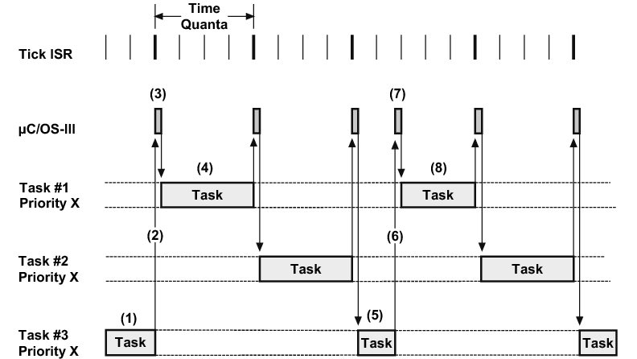
Raspoređivanje
- Izvor: https://doc.micrium.com/display/osiiidoc/Round-Robin+Scheduling
Raspoređivanje
- Dinamička izmena prioriteta procesa doprinosi ravnomernosti raspodele procesorskog vremena između procesa, ako se uspostavi obrnuta proporcionalnost između prioriteta procesa i obima u kome je on iskoristio poslednji kvantum.
- Pri tome se periodično proverava iskorišćenje poslednjeg kvantuma svakog od procesa i, u skladu s tim, procesima se dodeljuju novi prioriteti.
Raspoređivanje
- Takođe, dinamička izmena prioriteta procesa doprinosi ravnomernosti raspodele procesorskog vremena između korisnika, ako se uspostavi obrnuta proporcionalnost između prioriteta procesa, koji pripadaju nekom korisniku, i ukupnog udela u procesorskom vremenu tog korisnika u toku njegove interakcije sa računarom.
- Znači, što je ukupan udeo korisnika više ispod željenog proseka, to prioritet njegovih procesa više raste.
Raspoređivanje
- Ravnomerna raspodela procesorskog vremena se može postići i bez izmena prioriteta, ako se uvede lutrijsko raspoređivanje (lottery scheduling).
- Ono se zasniva na dodeli procesima lutrijskih lozova.
- Nakon svakog kvantuma na slučajan način se izvlači broj loza, a procesor se preključuje na proces koji poseduje izvučeni loz.
- Tako, ako ukupno ima m lozova, proces, koji poseduje n od m lozova (n < m), u proseku koristi n/m kvantuma procesorskog vremena.
Raspoređivanje
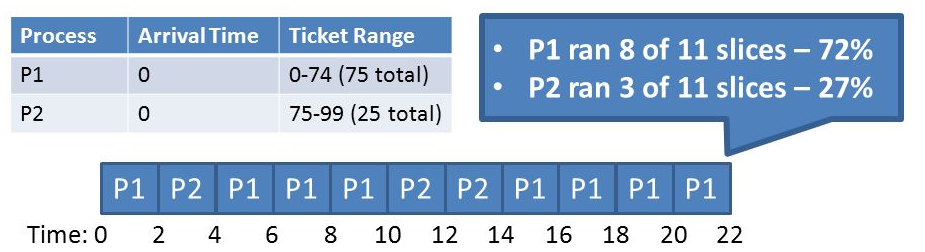
Raspoređivanje
- Izvor: Christo Wilson Lecture 6: Process Scheduling
Raspoređivanje
- Za multimedijalne aplikacije, koje zahtevaju visoku propusnost podataka i njihovu isporuku sa pravilnim periodom, cilj raspoređivanja je garantovanje procesima potrebnog broja kvantuma u pravilnim vremenskim razmacima.
Raspoređivanje
- Ostvarenje raznih ciljeva raspoređivanja se može zasnovati na istim mehanizmima raspoređivanja.
- U tom slučaju razni načini primene tih mehanizama ili razne politike raspoređivanja dovode do ostvarenja raznih ciljeva raspoređivanja.
- Razdvajanje mehanizama raspoređivanja od politike raspoređivanja je važno zbog fleksibilnosti.
- Mehanizmi (mogućnosti) raspoređivanja omogućuju uticanje na dužinu kvantuma i na nivo prioriteta, a politika raspoređivanja (iskorišćenje neke od mogućnosti) određuje dužinu kvantuma i nivo prioriteta.
Raspoređivanje
- Uticanje na dužinu kvantuma je važno, jer od dužine kvantuma zavisi iskorišćenje procesora, ali i odziv računara, odnosno brzina kojom on reaguje na korisničku akciju sa terminala.
- Pri tome, skraćenje (do određene granice) kvantuma doprinosi poboljšanju odziva, ali i smanjenju iskorišćenja procesora, jer povećava broj preključivanja koja troše procesorsko vreme.
Raspoređivanje
- Suviše kratak kvantum počinje da ugrožava i odziv, kada se prevelik procenat procesorskog vremena počne da troši na preključivanje.
- Sa stanovišta iskorišćenja procesora prihvatljiva su samo neophodna preključivanja (kada nije moguć nastavak aktivnosti procesa), odnosno, značajno smanjivanje učestanosti preključivanja.
Raspoređivanje
- S tom idejom na umu moguće je iskoristiti dinamičku izmenu prioriteta procesa za:
- održavanje dobrog odziva za procese, koji su u interakciji sa korisnicima
- održavanje dobrog iskorišćenja procesora za pozadinske (background) procese, koji nisu u (čestoj) interakciji sa korisnicima.
- Pri tome se interaktivnim procesima dodeljuje najviši prioritet i najkraći kvantum.
Raspoređivanje
- Pozadinskim procesima, koji su vrlo dugo aktivni bez ikakve interakcije sa korisnikom, se dodeljuje najniži prioritet i najduži kvantum.
- Procesu automatski opada prioritet i produžava se kvantum što je on duže aktivan i ima manju interakciju sa korisnikom.
- Povećanje interakcije sa korisnikom dovodi do porasta prioriteta procesa i smanjenja njegovog kvantuma.
Raspoređivanje
- Dinamička izmena prioriteta se obavlja periodično i nalazi se u nadležnosti politike raspoređivanja, koja je zadužena i za vezivanje odgovarajućih dužina kvantuma za odgovarajuće prioritete.
- Za operacije sloja za rukovanje procesorom je zajedničko da se obavljaju pod onemogućenim prekidima, što je prihvatljivo, jer je reč o kratkotrajnim operacijama.
Raspoređivanje
- To je naročito značajno za operacije koje rukuju deskriptorima procesa, jer jedino onemogućenje prekida osigurava ispravnost rukovanja listama u koje se uključuju i iz kojih se isključuju deskriptori procesa u toku ovih operacija (odnosno, osigurava konzistentnost ovih listi).
- Pod onemogućenim prekidima se obavljaju i operacija preključivanja (sa operacijom raspoređivanja), sistemska operacija za izmenu prioriteta procesa, kao i sistemske operacije za sinhronizaciju procesa.
Raspoređivanje
- Operacija raspoređivanja obuhvata bar dve radnje.
- Jedna ubacuje proces među spremne procese, tako što njegov deskriptor uvezuje na kraj liste deskriptora spremnih procesa, koja odgovara prioritetu dotičnog procesa.
- U ovom slučaju se podrazumeva da za svaki prioritet postoji posebna lista deskriptora spremnih procesa, na koju se primenjuje kružno raspoređivanje.
- Druga od ove dve radnje izvezuje iz listi deskriptora spremnih procesa deskriptor najprioritetnijeg spremnog procesa.
Pitanja
Pitanja
- Kakav može biti logički adresni prostor?
- Šta karakteriše kontinualni logički adresni prostor?
- Šta karakteriše segmentirani logički adresni prostor?
- Šta karakteriše stranični logički adresni prostor?
- Šta karakteriše stranično segmentirani logički adresni prostor?
- Šta karakteriše translacione podatke?
- Šta karakteriše translaciju logičkih adresa kontinualnog logičkog adresnog prostora u fizičke?
- Koji logički adresni prostor se koristi kada veličina fizičke radne memorije prevazilazi potrebe procesa?
- Šta karakteriše segmentaciju?
- Šta sadrže elementi tabele stranica?
- Šta karakteriše virtuelni adresni prostor?
- Po kom principu se prebacuju kopije virtuelnih stranica?
- Šta karakteriše straničnu segmentaciju?
- Kako se deli fizička radna memorija?
- Kako se deli virtuelni adresni prostor?
- U kom obliku može biti evidencija slobodne fizičke memorije?
- Kod kog adresnog prostora se javlja eksterna fragmentacija?
- Kako se nazivaju skupovi fizičkih stranica, koji se dodeljuju procesima?
- Kada treba proširiti skup fizičkih stranica procesa?
- Kada treba smanjiti skup fizičkih stranica procesa?
- Kada ne treba menjati veličinu skupa fizičkih stranica procesa?
- Koji pristupi oslobađanja fizičkih stranica obezbeđuju smanjenje učestanosti straničnih prekida nakon povećanja broja fizičkih stranica procesa?
- Koji pristupi oslobađanja fizičkih stranica koriste bit referenciranja?
- Koji pristupi oslobađanja fizičkih stranica koriste bit izmene?
- Šta karakteriše tipične ciljeve raspoređivanja?
- Šta je cilj raspoređivanja za neinteraktivno korišćenje računara?
- Šta je cilj raspoređivanja za interaktivno korišćenje računara?
- Zašto je uvedeno kružno raspoređivanje?
- Šta doprinosi ravnomernoj raspodeli procesorskog vremena?
- Šta je cilj raspoređivanja za multimedijalne aplikacije?
- Do čega dovodi skraćenje kvantuma?
- Šta se postiže uticanjem na nivo prioriteta i na dužinu kvantuma?
- Šta obuhvata rukovanje datotekom?
- Šta karakteriše hijerarhijsku organizaciju datoteka?
- Šta važi za apsolutnu putanju?
- Šta važi za relativnu putanju?
- Koje datoteke obrazuju sistem datoteka?
- Koja su prava pristupa datotekama?
- Koje kolone ima matrica zaštite?
- Čemu je jednak broj redova matrice zaštite?
- Gde se mogu čuvati prava pristupa iz matrice zaštite?
- Šta je potrebno za sprečavanje neovlašćenog menjanja matrice zaštite?
- Kada korisnici mogu posredno pristupiti spisku lozinki?
- Koju dužnost imaju administratori?
- Šta sadrži numerička oznaka korisnika?
- Kakvu numeričku oznaku imaju saradnici vlasnika datoteke?
- Kakvu numeričku oznaku imaju ostali korisnici?
- Kada se obavlja provera prava pristupa datoteci?
- Čime se bavi sigurnost?
- Kako se predstavlja sadržaj datoteke?
- Gde se javlja interna fragmentacija?
- Šta karakteriše kontinualne datoteke?
- Koji oblik evidencije slobodnih blokova masovne memorije je podesan za kontinualne datoteke?
- Šta je eksterna fragmentacija?
- Šta karakteriše rasute datoteke?
- Šta karakteriše tabelu pristupa?
- Šta ulazi u sastav tabele pristupa?
- Kada rasuta datoteka ne zauzima više prostora na disku od kontinualne datoteke?
- Koji oblik evidencije slobodnih blokova masovne memorije je podesan za rasute datoteke?
- Kada dolazi do gubitka blokova prilikom produženja rasute datoteke?
- Kada dolazi do višestrukog nezavisnog korišćenje istog bloka prilikom produženja rasute datoteke?
- Kada pregled izmena ukazuje da je sistem datoteka u konzistentnom stanju?
- Kako se ubrzava pristup datoteci?
- Od čega zavisi veličina bloka?
- Šta sadrži deskriptor kontinualne datoteke?
- Kako se rešava problem eksterne fragmentacije?
- Kako se ublažava problem produženja kontinualne datoteke?
- Šta sadrži deskriptor rasute datoteke?
- Šta je imenik?
- Šta karakteriše specijalne datoteke?
- Šta sadrži deskriptor specijalne datoteke?
- Šta omogućuju blokovske specijalne datoteke?
- Šta omogućuje rukovanje particijama?